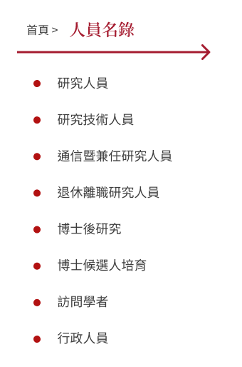
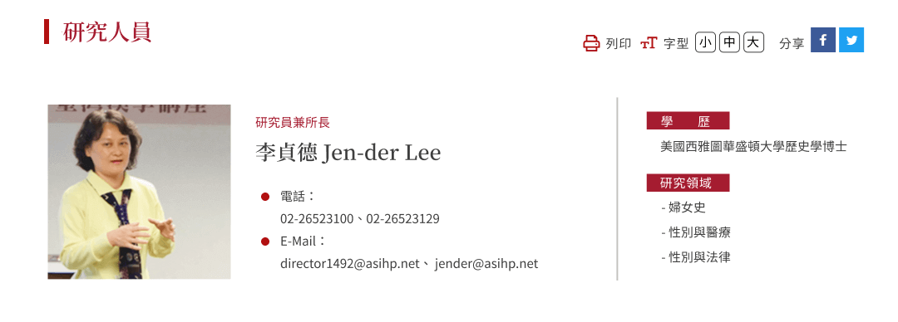
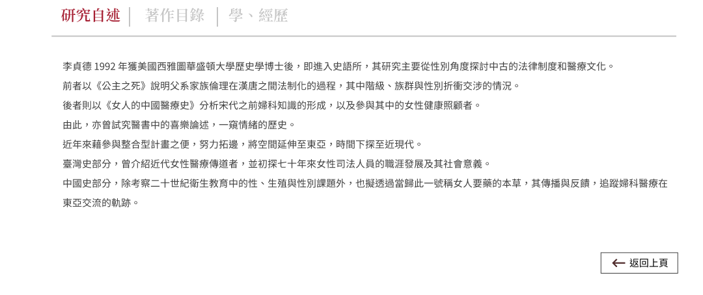
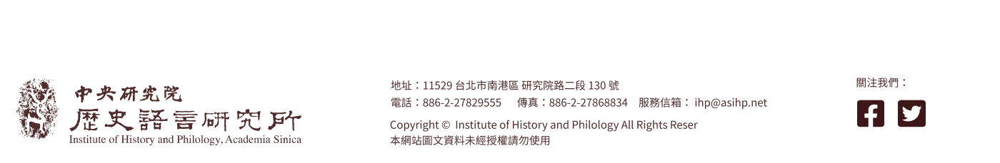

<!DOCTYPE html>
<html lang="zh-tw">
<head>
    <meta charset="UTF-8">
    <meta name="viewport" content="width=device-width, initial-scale=1.0">
    <link rel="icon" href="https://www.xuedesign.tw/images/favicon.ico"/>
    <title>[提案v2]中央研究院歷史語言研究所-內頁</title>
    <link rel="stylesheet" href="css/style.css">
    <link rel="stylesheet" href="css/superfish.css">
</head>
<body>
    
</body>
    
        <div id="wrap">
            <header>
                <div id="hdr-fixed">
                    <a href="index.html">
                    <div id="hdr-main">
                        
                    </div>
                    </a>
                    
                    <div id="nav-top">
                        <nav>
                            <ul class="sf-menu" id="example">
                                <li class="current"><a href="#">佈告欄</a>
                                    <ul>
                                        <li class="current">
                                            <a href="#">學術活動</a>
                                            <ul>
                                                <li><a href="#">講論會</a></li>
                                                <li><a href="#">專題演講</a></li>
                                                <li><a href="#">學術會議</a></li>
                                                <li><a href="#">研習營</a></li>
                                                <li><a href="#">傅斯年講座</a></li>
                                                <li><a href="#">學者來訪</a></li>
                                                <li><a href="#">學術榮譽</a></li>
                                                <li><a href="#">歷年學術活動查詢</a></li>
                                            </ul></li>
                                        <li><a href="#">行政公告</a></li>
                                        <li><a href="#">申請事項</a></li>
                                        <li><a href="#">人才招募</a></li>            
                                    </ul>
                                </li>
                                <li><a href="#">本所簡介</a>
                                    <ul>
                                        <li><a href="#">簡史</a></li>
                                        <li><a href="#">組織圖</a></li>
                                        <li><a href="#">現任主管</a></li>
                                        <li><a href="#">歷屆所長</a></li>
                                        <li><a href="#">學門簡介</a>
                                            <ul>
                                                <li><a href="#">歷史學門</a></li>
                                                <li><a href="#">考古學門</a></li>
                                                <li><a href="#">人類學門</a></li>
                                                <li><a href="#">文字學門</a></li>
                                            </ul>
                                        </li>
                                        <li><a href="#">學術諮詢委員</a></li>6           
                                    </ul>
                                </li>
                                <li><a href="#">人員名錄</a>
                                    <ul>
                                        <li><a href="#">研究人員</a></li>
                                        <li><a href="#">研究技術人員</a></li>
                                        <li><a href="#">通信暨兼任研究人員</a>
                                            <ul>
                                                <li><a href="#">通信研究員</a></li>
                                                <li><a href="#">兼任研究員</a></li>
                                            </ul>
                                        </li>
                                        <li><a href="#">退休離職研究人員</a></li>
                                        <li><a href="#">博士後研究</a></li>
                                        <li><a href="#">博士候選人培育</a></li>
                                        <li><a href="#">訪問學者</a></li>
                                        <li><a href="#">行政人員</a></li>
                                    </ul>
                                </li>
                                <li><a href="#">研究室與工作室</a>
                                    <ul>
                                        <li><a href="#">專題研究室</a>
                                            <ul>
                                                <li><a href="#">文化思想史研究室</a></li>
                                                <li><a href="#">法律史研究室</a></li>
                                                <li><a href="#">臺灣與東南亞考古學研究室</a></li>
                                                <li><a href="#">文物圖象研究室</a></li>
                                                <li><a href="#">生命醫療史研究室</a></li>
                                                <li><a href="#">禮俗宗教研究室</a></li>
                                                <li><a href="#">世界史研究室</a></li>
                                                <li><a href="#">古代文明研究室</a></li>
                                                <li><a href="#">數位人文學研究室</a></li>
                                            </ul>
                                        </li>
                                        <li><a href="#">工作室</a>
                                            <ul>
                                                <li><a href="#">明清檔案工作室</a></li>
                                                <li><a href="#">漢籍全文資料庫工作室</a></li>
                                                <li><a href="#">地理資訊系統工作室</a></li>
                                                <li><a href="#">金文工作室</a></li>
                                                <li><a href="#">安陽工作室</a></li>
                                            </ul>
                                        </li>
                                    </ul>
                                </li>
                                <li><a href="#">出版品</a>
                                    <ul>
                                        <li><a href="#">專書</a>
                                            <ul>
                                                <li><a href="#">歷史文獻</a></li>
                                                <li><a href="#">文字學</a></li>
                                                <li><a href="#">考古學</a></li>
                                                <li><a href="#">民族學</a></li>
                                                <li><a href="#">書目索引</a></li>
                                                <li><a href="#">傅斯年講座</a></li>
                                                <li><a href="#">漢學會議論文集</a></li>
                                            </ul>   
                                        </li>
                                        <li><a href="#">史語所集刊</a></li>
                                        <li><a href="#">古今論衡</a></li>
                                        <li><a href="#">Asia Major</a></li>
                                        <li><a href="#">法制史研究</a></li>
                                        <li><a href="#">目錄檢索</a></li>
                                        <li><a href="#">價目表（下載）</a></li>
                                        <li><a href="#">銷售通路</a></li>
                                    </ul>
                                </li>
                                <li><a href="#">學術資源</a>
                                    <ul>
                                        <li><a href="#">傅斯年圖書館</a></li>
                                        <li><a href="#">歷史文物陳列館</a></li>
                                        <li><a href="#">檔案館</a></li>
                                        <li><a href="#">本所資料庫</a></li>
                                    </ul>
                                </li>
                                <li><a href="#">交流研習</a>
                                    <ul>
                                        <li><a href="#">國際學術交流</a></li>
                                        <li><a href="#">歷史研習營</a></li>
                                        <li><a href="#">兩岸歷史文化研習營</a></li>
                                        <li><a href="#">明清研究推動委員會</a></li>
                                        <li><a href="#">史語藝廊</a></li>
                                    </ul>
                                </li>
                            </ul>               
                        </nav>

                    </div>
                </div>
            </header>
            
            <div id="ccontent">
                <div id="c-left">
                    
                </div>
                <div id="c-right">
                    
                    
                </div>
            </div>
                        
            <footer>
                <div id="ftr-main">
                    
                </div>
            </footer>
        </div><!--//end #wrap-->

        <script src="https://cdn.jsdelivr.net/npm/jquery@2.2.4/dist/jquery.min.js"></script>
        <script src="https://cdn.jsdelivr.net/npm/superfish@1.7.10/dist/js/superfish.min.js"></script>
        <script>
            jQuery(document).ready(function() {
              jQuery('ul.sf-menu').superfish({
                cssArrows:  false,
                delay: 0,
              });
            });
          </script>
        <script>
            (function(){
                var obj = document.getElementById("nav-top");
                var top = getTop(obj);
                var isIE6 = /msie 6/i.test(navigator.userAgent);
                window.onscroll = function(){
                    var bodyScrollTop = document.documentElement.scrollTop || document.body.scrollTop;
                    if (bodyScrollTop > top){
                        obj.style.position = (isIE6) ? "absolute" : "fixed";
                        obj.style.top = (isIE6) ? bodyScrollTop + "px" : "0px";
                    } else {
                        obj.style.position = "static";
                    }
                }
                function getTop(e){
                    var offset = e.offsetTop;
                    if(e.offsetParent != null) offset += getTop(e.offsetParent);
                    return offset;
                }
            })()
            </script>    
</html>


<!-- Created By
   ##############               ###############   
    ##############             ###############    
    ##############             ##############     
     ##############           ##############      
      ##############          #############       
       #############         ##############       
        #############       ##############        
        ##############      #############         
         ###############################          
         ###############################          
        #################################         
        ##############     ##############         
       ##############       ##############        
       ##############        ##############       
      ##############         #######           
     ###############          ##############      
     ##############           ###############     
    ######      
    ##############              ##############    
   ##############               ##############
          
                 xuedesign studio 
             https://www.xuedesign.tw/
--> 